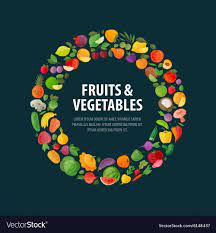
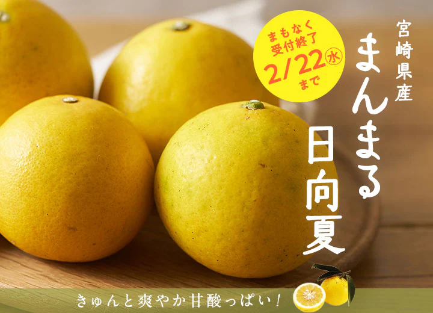
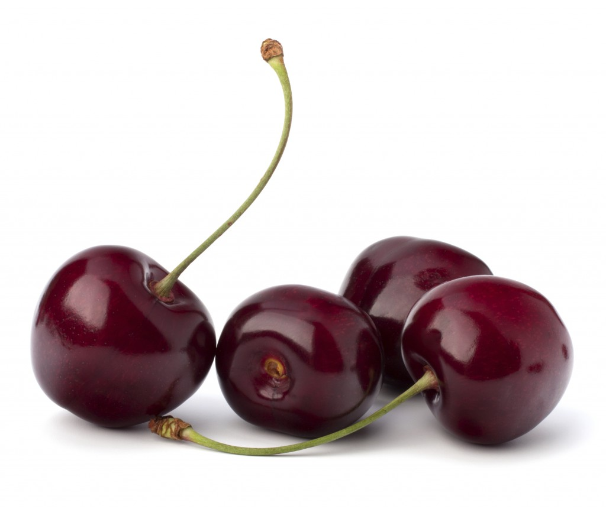
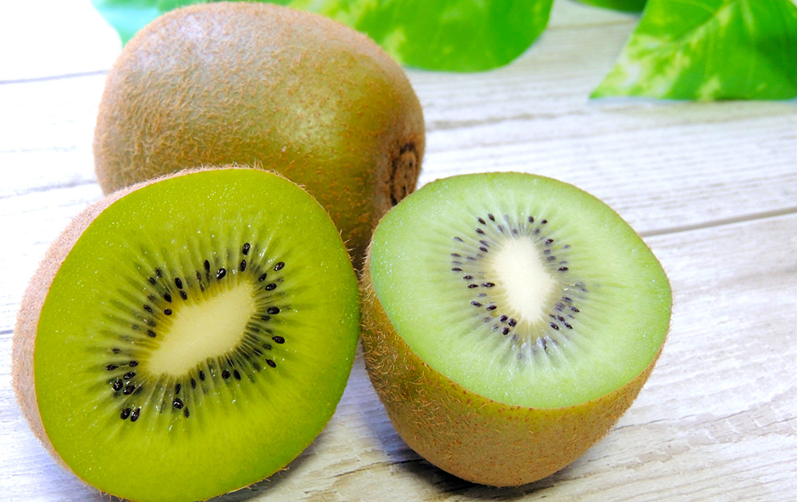

<!DOCTYPE html>
<html lang="ja"></html>
<head>
    <meta charset="utf-8">
        <link href="css/style.css" rel="stylesheet">
    <title>
        フルーツfruvege
    </title>

</head>

    <body>
        <header>
            <div class="header_box">
        <h1><a href="index.html"></a></h1>
        
        <nav>
        <ul>
            
            <li><a href="index.html">ホーム</a></li>
            <li><a href="fruit.html">フルーツ</a></li>
            <li><a href="vegetable.html">vegetableとは</a></li>
            <li><a href="about.html">fruvegeとは</a></li>
                </ul>
                    </nav>
                    </div>
                </header>
                <!--ヘッダーここまで-->
                <main>
                    <div class="main_box">
                        <h2>fresh seasonal fruits</h2>
                            <div class="item_box">
                                <section class="item">
            
                    <h3>日向夏<br>itrus tamurana</h3>
                    <p>ゆずが突然変異したもの。表面は黄色く皮はあつい。グレープフルーツやレモンに近い味。</p>
                                </section>
                    
                                <section class="item">
            
                    <h3>ダークチェリー<br>bingcherry</h3>
                    <p>アメリカ西海岸で採れるさくらんぼ。色が濃く身が締まっているのが特徴です。</p>
                                </section>

                                <section class="item">
            
                    <h3>キウイフルーツ<br>kiwifruit</h3>
                    <p>マタタビかの植物の果実甘みと爽やかな酸味が特徴でビタミンCを豊富に含みます。</p>
                                </section>
                            </div>
                    </div>
                </main>
                <!--mainここまで-->


        <footer>
            <div class="footer_box">
        <p>fresh fruits and vegetables</p>
        &copy;2023 fruvege Inc.
            </div>
        </footer>
        <!--フッターここまで-->
    </body>
</html>